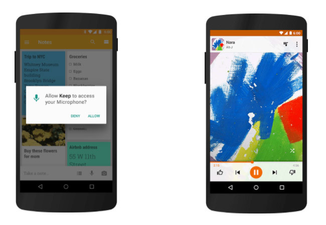

Android 6.0 Marshmallow
Llegamos a la sexta versión de Android, que vio la luz el 5 de octubre de 2015. Con Material Design ya asentado y siete años de recorrido, Google ya tiene a Android sobre raíles y de las ocho subversiones de Honeycomb se pasan a dos.

En Marshmallow el foco es seguir mejorando y cohesionando todo el sistema tras casi una décda de desarrollo. Un aspecto que necesitaba una vuelta de tuerca era el sistema de permisos de todo o nada que existía hasta entonces. Con los permisos en tiempo de ejecución, las aplicaciones te pueden pedir permiso para usar cierta función (cámara, micrófono...) solo cuando lo necesitan, y no de entrada.
Otra preocupación cada vez mayor es la autonomía de la batería. Android avanza, el hardware avanza pero las baterías... no demasiado. Google se saca de la manga el Modo Doze, una especie de policía de la batería que obliga a las aplicaciones a dormir y reduce la velocidad de la CPU cuando la pantalla está apagada, para alargar la duración de la batería.
Llega el soporte para las tecnologías de moda: USB-C, modo 4K para aplicaciones, multiventana (experimental) y el soporte nativo para el lector de huellas. Uno que se pierde por el camino es el soporte para Miracast, que desaparece.
Con Marshmallow llega Direct Share, la forma más rápida de enviar contenido a un contacto específico y Now On Tap, ese botón mágico que busca qué hay en tu pantalla para ofrecerte información relacionada.